Elastostatics¶
Git reference: Example elastostatics.
This example deals with equations of linear elasticity inside an L-shaped domain. Elastostatics studies linear elastic deformations under the conditions of equilibrium where all forces acting on the elastic body sum to zero, and displacements are not a function of time.
The governing equations have the form:
(1)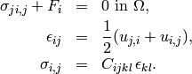
Here the subscript  indicates 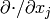, 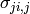 is the
stress tensor, 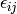 is the strain (deformation),
indicates 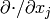, 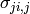 is the
stress tensor, 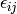 is the strain (deformation),  is the displacement,
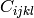 is the forth-order stiffness tensor. By Einstein summation convention,
the 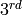 equation of (1) represent the following:
is the displacement,
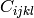 is the forth-order stiffness tensor. By Einstein summation convention,
the 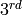 equation of (1) represent the following:
(2)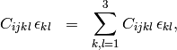
where 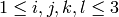.
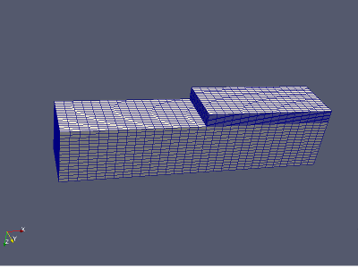The domain of interest is an L-shaped beam equipped with
zero Dirichlet boundary conditions: 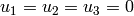 on all five boundary faces (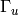)
except the left-most vertical one ( ), where an external force
), where an external force  is applied.
is applied.
// Boundary condition types.
BCType bc_types_x(int marker)
{
return BC_NATURAL;
}
BCType bc_types_y(int marker)
{
return BC_NATURAL;
}
BCType bc_types_z(int marker)
{
return (marker == 3) ? BC_ESSENTIAL : BC_NATURAL;
}
The stiffness tensor is constant and symmetric:
(3)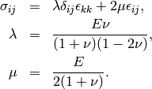
Here 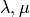 are the Lame constants,  is the Young modulus,
is the Young modulus,  is the Poisson ratio.
In our example, 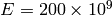 Gpa and 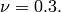
is the Poisson ratio.
In our example, 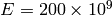 Gpa and 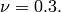
Substituting (3) back into (1), we obtain:
The corresponding weak formulation is as follows:
(5)![\begin{eqnarray*}
\int_{\Omega} (\lambda + 2\mu) u_{i} \, v_{i} + \mu u_{j} \, v_{j} + \mu u_{k} \, v_{k} \quad
+\quad \int_{\Omega} \lambda u_{i} \, v_{j} + \mu u_{j} \, v_{i} \quad
+\quad \int_{\Omega} \lambda u_{i} \, v_{k} + \mu u_{k} \, v_{i}
& = & 0, \\ \nonumber
\int_{\Omega} \mu u_{i} \, v_{i} + (\lambda + 2\mu) u_{j} \, v_{j} + \mu u_{k} \, v_{k} \quad
+\quad \int_{\Omega} \lambda u_{j} \, v_{k} + \mu u_{k} \, v_{j}
& = & 0, \\
\int_{\Omega} \mu u_{i} \, v_{i} + \mu u_{j} \, v_{j} + (\lambda + 2\mu) u_{k} \, v_{k}
& = & \int_{\Gamma_F} F_i v. \nonumber
\end{eqnarray*}](../../../_images/math/4d98d6a1924ae3d94bf3bb675c5e59aa8cb9a91d.png)
Here is the code for the weak forms:
template<typename real, typename scalar>
scalar bilinear_form_0_0(int n, double *wt, fn_t<scalar> *u_ext[], fn_t<real> *u, fn_t<real> *v, geom_t<real> *e, user_data_t<scalar> *data)
{
return int_a_dx_b_dy_c_dz<real, scalar>(lambda + 2*mu, mu, mu, n, wt, u, v, e);
template<typename real, typename scalar>
scalar bilinear_form_0_0(int n, double *wt, fn_t<scalar> *u_ext[], fn_t<real> *u, fn_t<real> *v, geom_t<real> *e, user_data_t<scalar> *data)
{
return int_a_dx_b_dy_c_dz<real, scalar>(lambda + 2*mu, mu, mu, n, wt, u, v, e);
}
template<typename real, typename scalar>
scalar bilinear_form_0_1(int n, double *wt, fn_t<scalar> *u_ext[], fn_t<real> *u, fn_t<real> *v, geom_t<real> *e, user_data_t<scalar> *data)
{
return int_a_dudx_dvdy_b_dudy_dvdx<real, scalar>(lambda, mu, n, wt, v, u, e);
}
template<typename real, typename scalar>
scalar bilinear_form_0_2(int n, double *wt, fn_t<scalar> *u_ext[], fn_t<real> *u, fn_t<real> *v, geom_t<real> *e, user_data_t<scalar> *data)
{
return int_a_dudx_dvdz_b_dudz_dvdx<real, scalar>(lambda, mu, n, wt, v, u, e);
}
template<typename real, typename scalar>
scalar surf_linear_form_0(int n, double *wt, fn_t<scalar> *u_ext[], fn_t<real> *v, geom_t<real> *e, user_data_t<scalar> *data)
{
return 0.0;
}
template<typename real, typename scalar>
scalar bilinear_form_1_1(int n, double *wt, fn_t<scalar> *u_ext[], fn_t<real> *u, fn_t<real> *v, geom_t<real> *e, user_data_t<scalar> *data)
{
return int_a_dx_b_dy_c_dz<real, scalar>(mu, lambda + 2*mu, mu, n, wt, u, v, e);
}
template<typename real, typename scalar>
scalar bilinear_form_1_2(int n, double *wt, fn_t<scalar> *u_ext[], fn_t<real> *u, fn_t<real> *v, geom_t<real> *e, user_data_t<scalar> *data)
{
return int_a_dudy_dvdz_b_dudz_dvdy<real, scalar>(lambda, mu, n, wt, v, u, e);
}
template<typename real, typename scalar>
scalar surf_linear_form_1(int n, double *wt, fn_t<scalar> *u_ext[], fn_t<real> *v, geom_t<real> *e, user_data_t<scalar> *data)
{
return 0.0;
}
template<typename real, typename scalar>
scalar bilinear_form_2_2(int n, double *wt, fn_t<scalar> *u_ext[], fn_t<real> *u, fn_t<real> *v, geom_t<real> *e, user_data_t<scalar> *data)
{
return int_a_dx_b_dy_c_dz<real, scalar>(mu, mu, lambda + 2*mu, n, wt, u, v, e);
}
template<typename real, typename scalar>
scalar surf_linear_form_2(int n, double *wt, fn_t<scalar> *u_ext[], fn_t<real> *v, geom_t<real> *e, user_data_t<scalar> *data)
{
scalar res = 0.0;
for (int i = 0; i < n; i++)
res += wt[i] * (f * v->fn[i]);
return res;
}
Solution graph:

See also